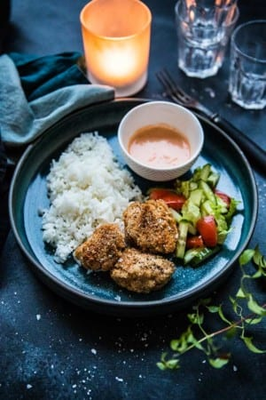

Friterad kyckling med ris och srirachamajo
För: 4 personer
Friterad kyckling:
- 4 kycklingfiléer
- 1 ägg
- 1 dl majsstärkelse
- 2 dl ströbröd
- 1 tsk lökpulver
- 1 tsk vitlökspulver
- salt, peppar
- 5-6 dl rapsolja
Srirachamajo:
- 0,5 dl srirachasås
- 1,5 dl majonnäs
Tillbehör:
- 4 dl jasminris
- tomat, sallad, gurka + äppelcidervinäger

- Blanda srirachasås med majonnäs och ställ svalt. Koka riset enligt anvisningen på förpackningen (observera att det brukar räcka med att sjuda riset i 12 minuter, inte 18-20 minuter som det står på många förpackningar. För 4 dl jasminris brukar det räcka med 6-7 dl vatten.) Gör en sallad av tomat, sallad och gurka som serveras med äppelcidervinäger.
- Tina kycklingfiléerna om de är frysta. Torka av kycklingen med hushållspapper skär till lagom bitar. Vispa upp ägget i en skål med lite salt. Blanda ströbröd och majsstärkelse med salt, peppar, lökpulver och vitlökspulver i en annan skål.
- Hetta upp oljan i en stekpanna med högre kanter, eller en kastrull. Doppa kycklingbitarna i ägget och vänd sedan runt det i ströbrödsblandningen. Fritera kycklingen gyllene på båda sidor. Fyll inte hela stekpannan på en gång – ta lite kyckling i taget. Låt rinna av på ett hushållspapper.